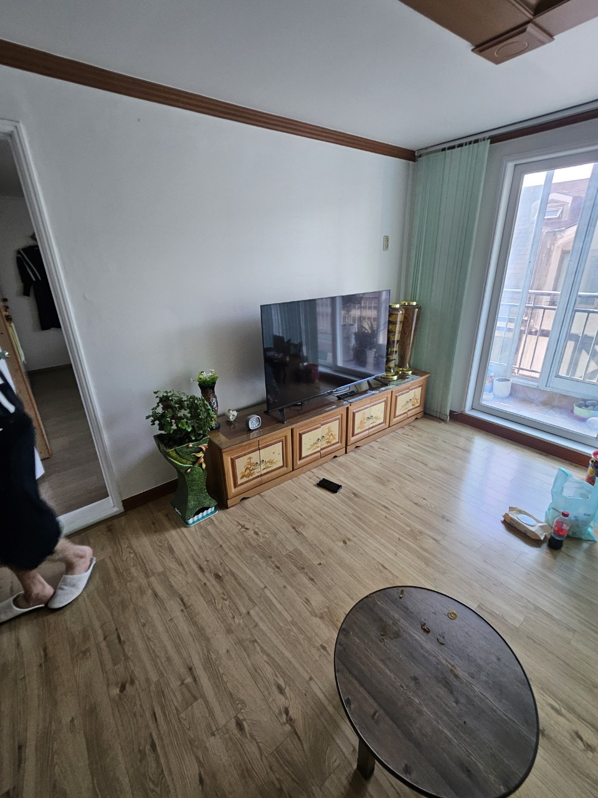
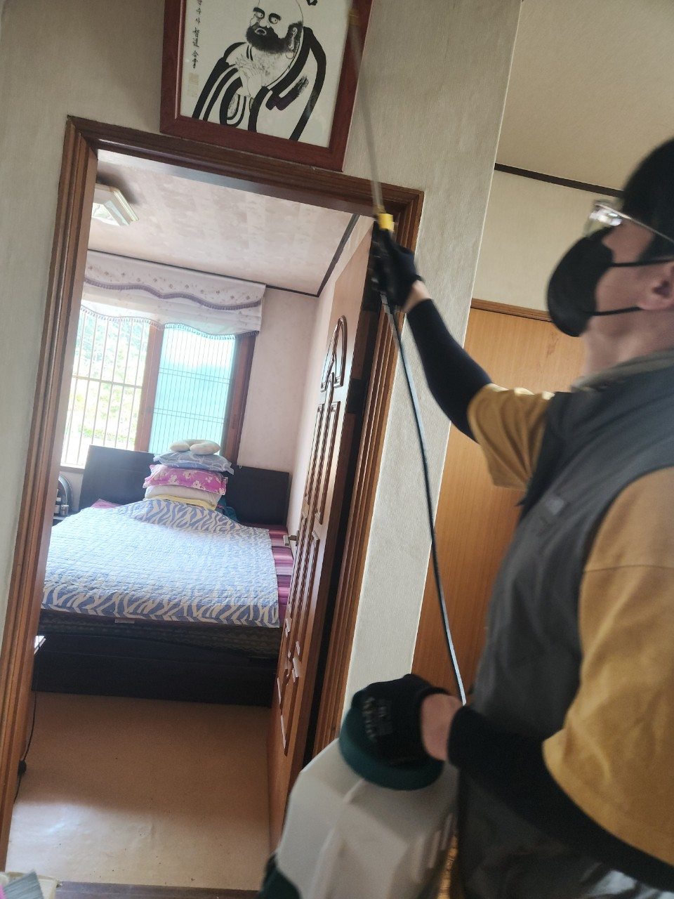
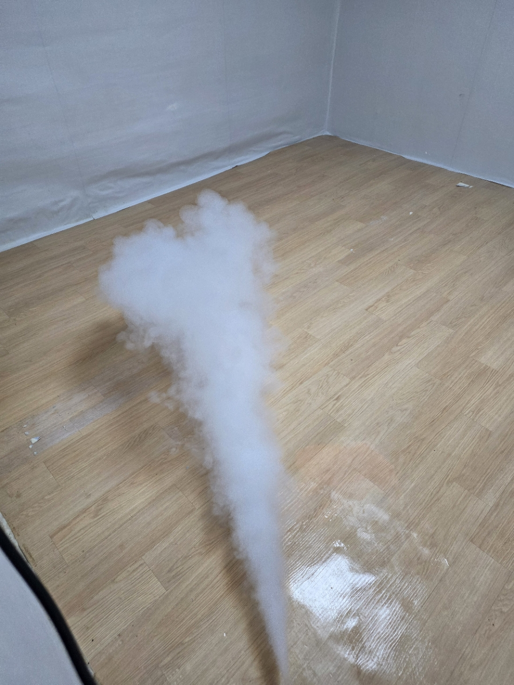
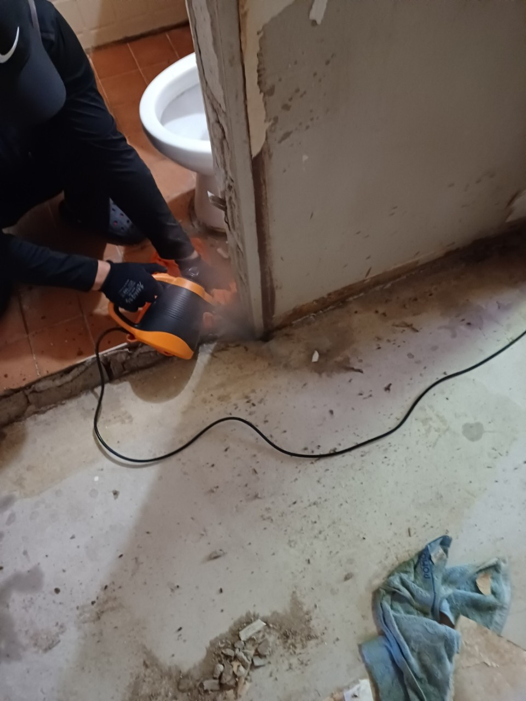
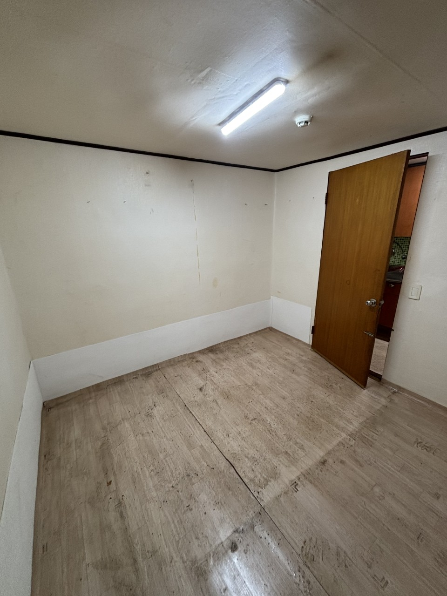
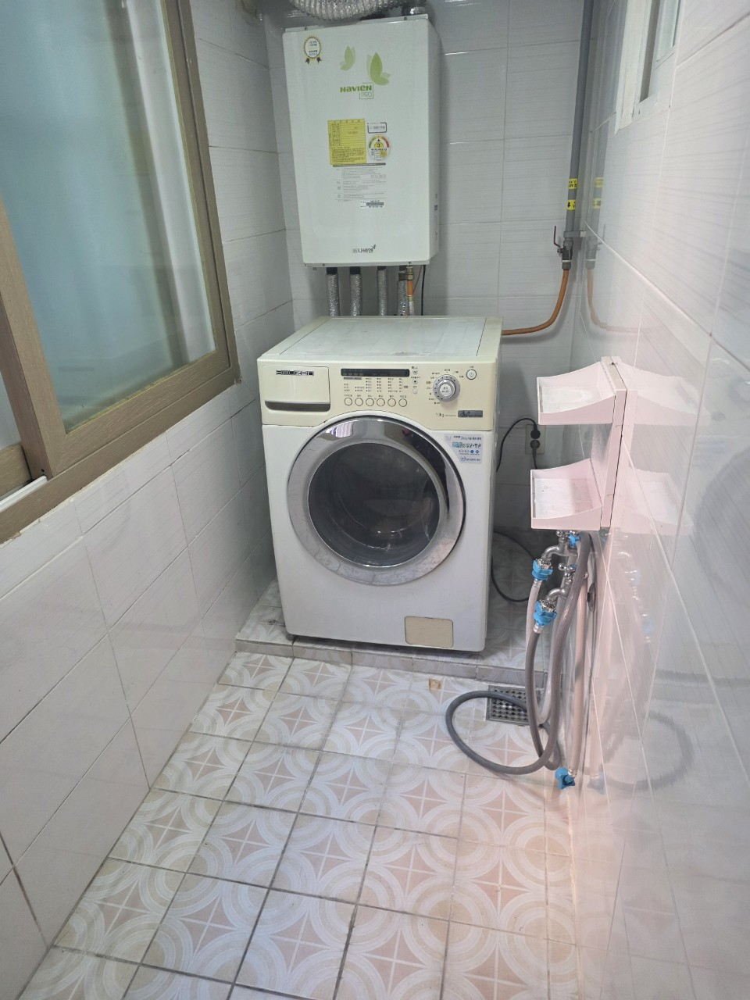
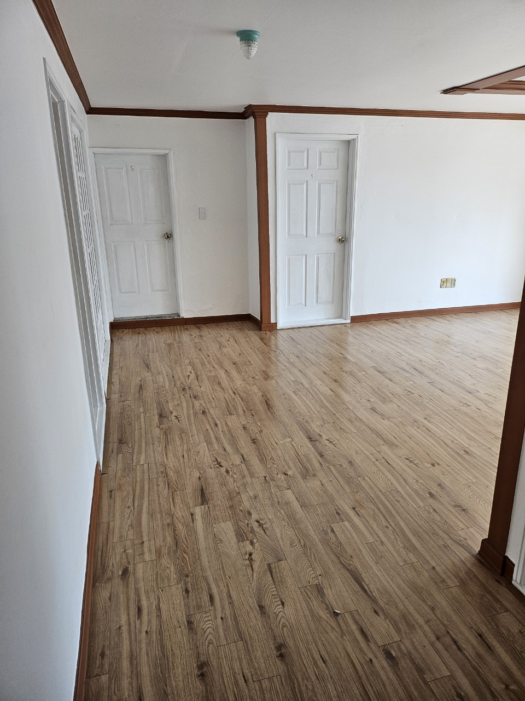

경기 파주시 유품정리 · 고독사청소 · 특수청소
파주시 유품정리
가족의 마음으로 정리합니다
파주시 아파트, 오피스텔, 빌라, 주택 등 현장 구조에 맞춰 유품 분류와 중요 물품 확인, 폐기물 정리, 공간 정돈까지 안내드립니다.
파주시 방문 상담365일 상담 가능유품정리 · 고독사청소
파주시 유품정리 비용 안내
정확한 비용은 현장 규모, 물품 양, 엘리베이터 여부, 폐기물 양, 특수청소 필요 여부에 따라 달라질 수 있습니다.
유품정리25만원부터
중요 물품 확인, 생활용품 분류, 폐기물 분류, 공간 정리 상담
고독사청소80만원부터
오염 범위 확인, 악취·위생 문제, 특수청소 필요 여부에 따라 안내
폐기물처리25만원부터
1톤 1대 기준. 폐기물 양, 운반 거리, 층수에 따라 변동 가능
표시 금액은 기본 안내 금액입니다. 현장 확인 후 실제 작업 범위와 비용을 안내드립니다.
파주시 유품정리 진행 과정
처음 상담부터 마무리 확인까지 가족과 협의하며 단계별로 진행합니다.
1
상담 접수
주소, 공간 형태, 정리 범위, 희망 일정을 확인합니다.
2
현장 확인
물품 양, 층수, 엘리베이터 여부를 확인합니다.
3
중요품 분류
서류, 통장, 사진, 귀중품 등을 분류합니다.
4
유품정리
보관품, 확인품, 폐기품을 구분합니다.
5
마무리 확인
정리 후 공간 상태를 확인합니다.
파주시 유품정리 작업 사진











파주시 인근 지역 상담 안내
파주시 유품정리 상담접수
현장 상황과 주소를 남겨주시면 방문 가능 일정과 정리 범위를 확인해 안내드립니다.
지역 유품정리 상담
010-4720-3895 전화상담가족의 마음으로 조심스럽게 정리하겠습니다
유품정리 · 고독사청소 · 특수청소 · 폐기물처리 상담